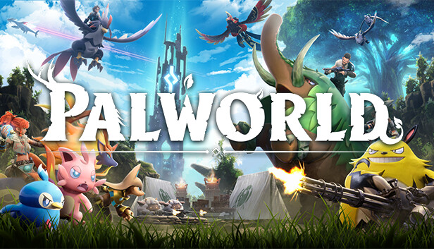

健康を害されたことがあるゲーム

コストの概念、ゲーム上のテンポの重要さを教えてくれたゲーム。
すべてのカードゲーム始祖だけあって、5年やっても飽きない。
一生触り続ける予定。">
すべてのカードゲーム始祖だけあって、5年やっても飽きない。
一生触り続ける予定。">


大好きなゲーム


話題になっていたので購入。
そのまま何日か寝ることなくプレイし続けてしまった。
命の尊さを思い出してくれた作品。">
そのまま何日か寝ることなくプレイし続けてしまった。
命の尊さを思い出してくれた作品。">

アルティメットチキンホースと同じくらい
パーティゲームとして大好きなゲーム。
妨害の絵面がマヌケすぎて許せてしまう。">
パーティゲームとして大好きなゲーム。
妨害の絵面がマヌケすぎて許せてしまう。">

スマブラとしてはSPが最高だけど、当時の思い出補正でこれを上げました。
スピード感があり好み。">
スピード感があり好み。">
印象深いゲーム
緩いPvPではありますが、温まり方は場合によってはそれ以上のもの。
気楽にやれるし、理想的なデッキを組めた時の喜びはひとしお。">
気楽にやれるし、理想的なデッキを組めた時の喜びはひとしお。">
カカロットとは別軸でキャラゲーの名作。操作可能キャラの多さ、
再現性の高さは現代においても通用する。新作が楽しみ。">
再現性の高さは現代においても通用する。新作が楽しみ。">


シリーズの中で一番好きです。
世界を巻き込むステージのテンポがシリーズで一番気持ちよくなれる。">
世界を巻き込むステージのテンポがシリーズで一番気持ちよくなれる。">


Z2の方がたくさんプレイしたが、魔人ブウが強すぎて良い印象がないのでこちらをランクイン。
ドラゴンボールを好きになったきっかけ。後発のスパーキングシリーズより、ゲームシステムとOPが良い。OPは現代でも格好いいと思う。
誰に何と言われようが、ドラゴンボールのOPは影山ヒロノブが歌わないとだめだと思う。">
ドラゴンボールを好きになったきっかけ。後発のスパーキングシリーズより、ゲームシステムとOPが良い。OPは現代でも格好いいと思う。
誰に何と言われようが、ドラゴンボールのOPは影山ヒロノブが歌わないとだめだと思う。">
思い出のゲーム
Nティアーはこの作品のために作りました。それくらい好きなゲーム。">